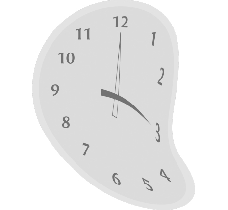
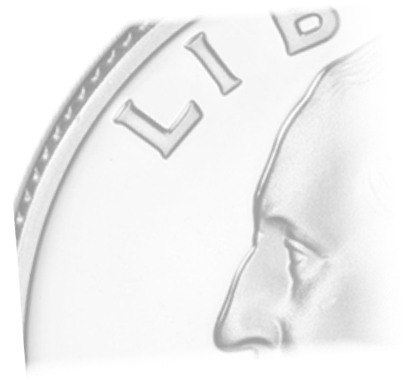

DEFINE
The passing of time

The warping of dreams

QUARTER-LIFE CRISIS
/ (ˈkwɔːtəˌlaɪf) /
noun
a crisis that may be experienced in one’s twenties, involving anxiety over the direction and quality of one’s life. 1
It is supposed to be the time of opportunity and adventure, before mortgages and marriage have taken their toll. But struggling to cope with anxieties about jobs, unemployment, debt and relationships, many young adults are experiencing a “quarterlifer crisis”, according to new research by British psychologists. Bearing all the hallmarks of the midlife crisis, this phenomenon – characterised by insecurities, disappointments, loneliness and depression – is hitting twenty- and thirtysomethings shortly after they enter the “real world”, with educated professionals most likely to suffer. 2
1. https://www.collinsdictionary.com/us/dictionary/english/quarterlife-crisis
2. https://www.theguardian.com/society/2011/may/05/quarterlife-crisis-young-insecure-depressed